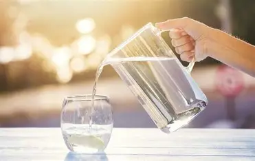
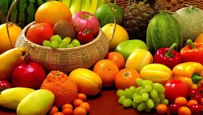

Гідратація
Баланс води
Пийте мінімум 1.5-2 літри води на день для енергії та фокусу.
Відпочинок
Режим сну
Якісний сон протягом 7-8 годин відновлює імунітет та настрій.

Харчування
Корисна їжа
Свіжі овочі та фрукти — це природне джерело вітамінів.
Активність
Рух щодня
Пробіжка або прогулянка на свіжому повітрі дарують бадьорість.